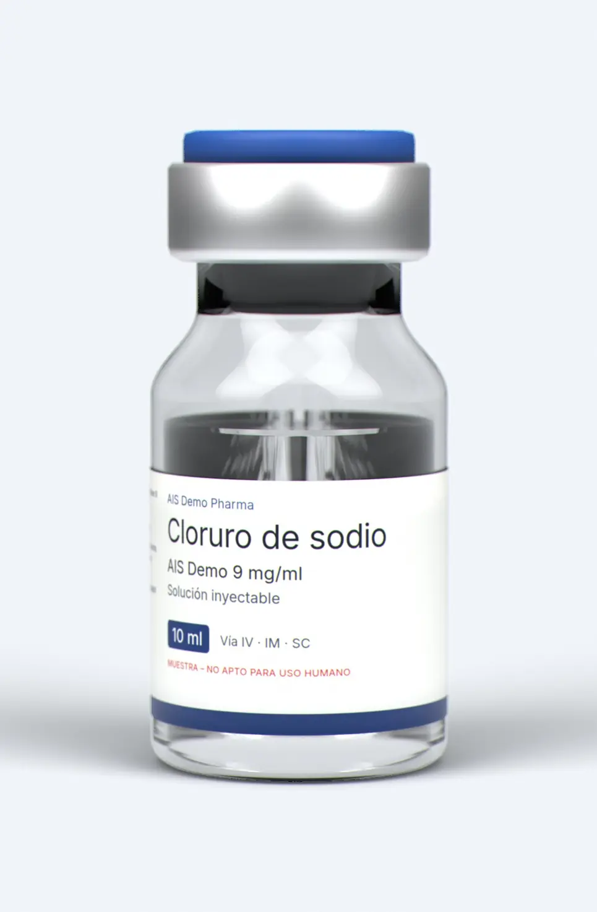

Qué revisamos en cada vial
En AIS Vision Systems desarrollamos soluciones de visión artificial para el control de calidad en la industria farmacéutica. Inspeccionamos en tiempo real cierres, etiquetas, marcajes y códigos para detectar defectos y mantener la trazabilidad de cada unidad.

1234Tapón y boca
Presencia, posición e integridad del cierre.
Nivel de líquido
Control del llenado de cada envase.
Etiqueta
Presencia, posición y defectos visuales, a 360°.
Trazabilidad y serialización
Lectura del lote, la caducidad y los códigos.